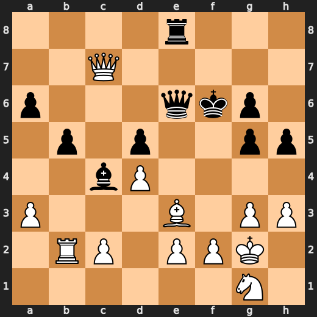
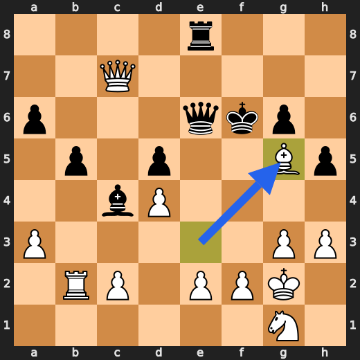
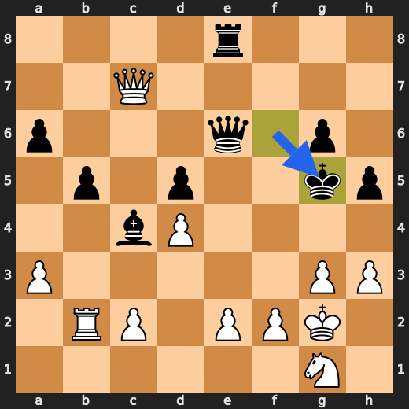
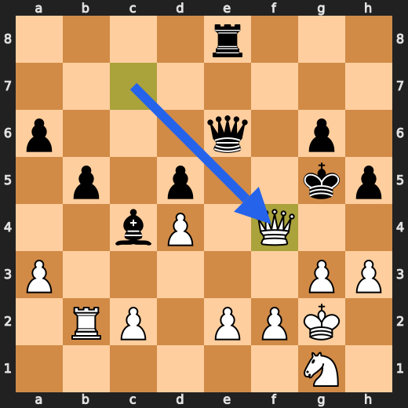

ReasonTree
A small state-action tree for making Claude compare possible paths before committing to an answer.
Chess Demo
chess_mate2: ReasonTree selects Bxg5+.

Start position
1. Bxg5+
1... Kxg5
2. Qf4#- Bxg5+: score=0.65, Sacrifices the bishop to force the black king onto g5 or f5.
- ...Kxg5: score=0.95, The king capture walks into Qf4 mate.
- Qf4#: score=1.00, The queen covers the escape squares and gives mate.